多了哪些牌
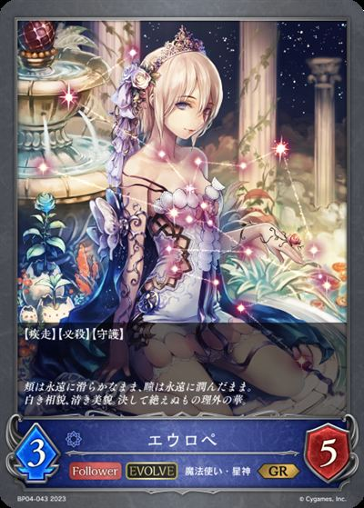
+1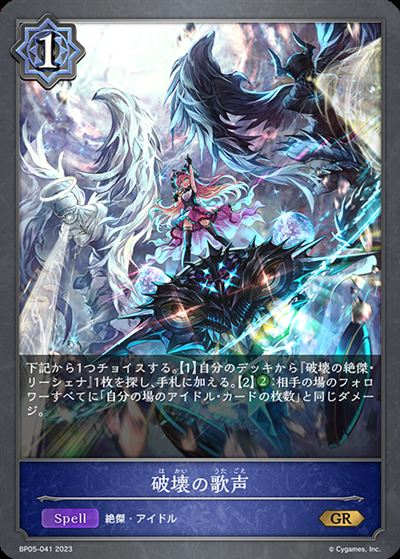
+1+1少了哪些牌
-2-1
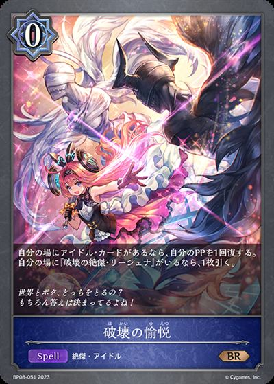
主BP08-051/BP08-P12：破坏的愉悦主卡组 × 3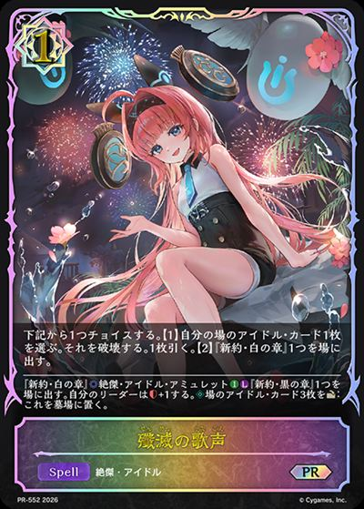
主BP20-045/PR-552：歼灭的歌声主卡组 × 3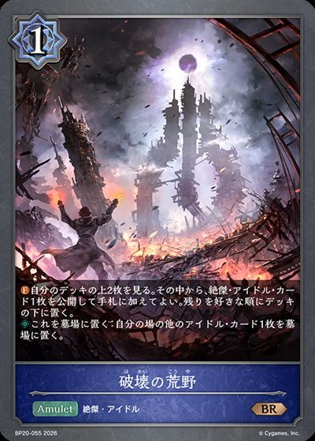
主BP20-055/BP20-P29：破坏的荒野主卡组 × 3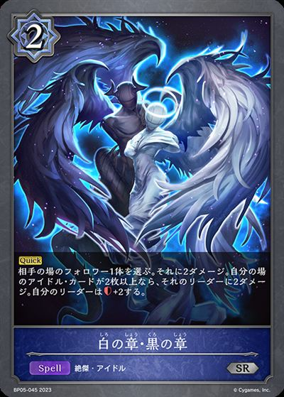
主BP05-045/BP05-P19：白之章·黑之章主卡组 × 3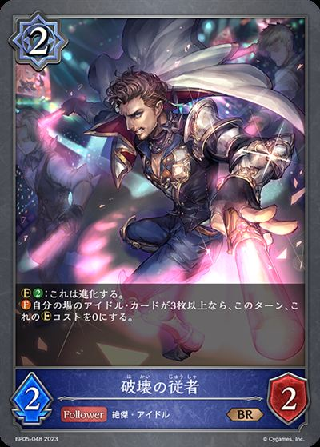
主BP05-048/BP05-P22：破坏的随从主卡组 × 3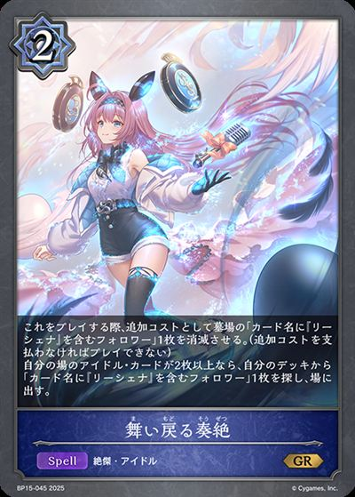
主BP15-045/BP15-P09：重返的奏绝主卡组 × 3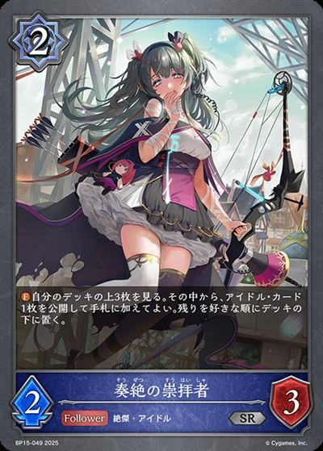
主BP15-049：奏绝的崇拜者主卡组 × 2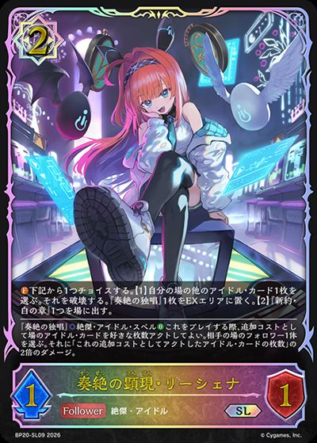
主BP20-037/BP20-SL09：奏绝的显现·里榭娜主卡组 × 3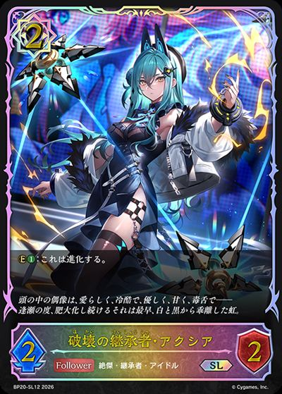
主BP20-040/BP20-SL12：破坏的继承者·阿克西雅主卡组 × 3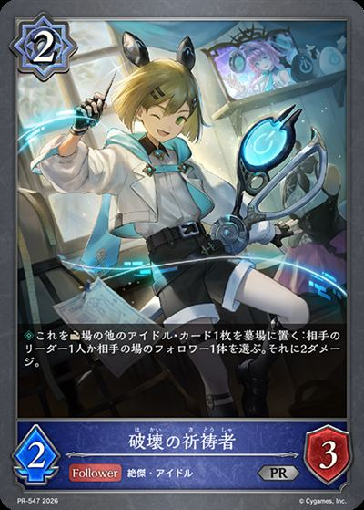
主BP20-048/PR-547：破坏的祈祷者主卡组 × 3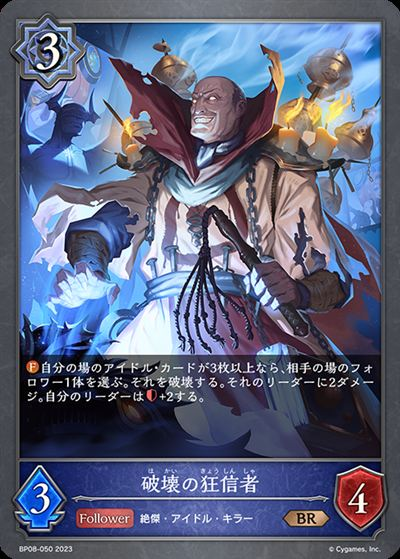
主BP08-050：破坏的狂信者主卡组 × 3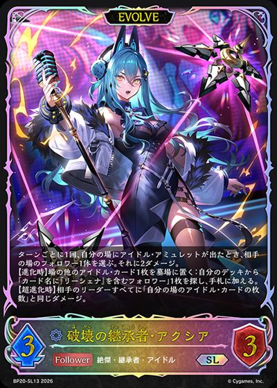
进BP20-041/BP20-SL13/BP20-U04：破坏的继承者·阿克西雅进化 × 3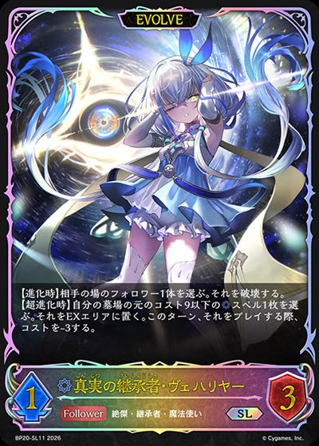
进BP20-039/BP20-SL11/BP20-U03：真实的继承者·薇赫里雅进化 × 1
+1
+1+1 +1+1+2+2
+1+1+2+2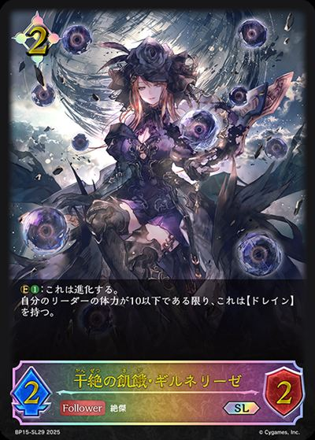
+2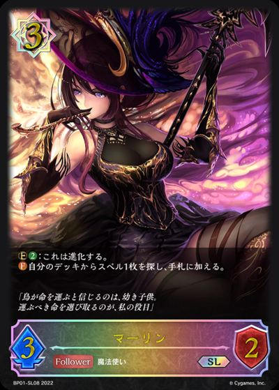
+1+1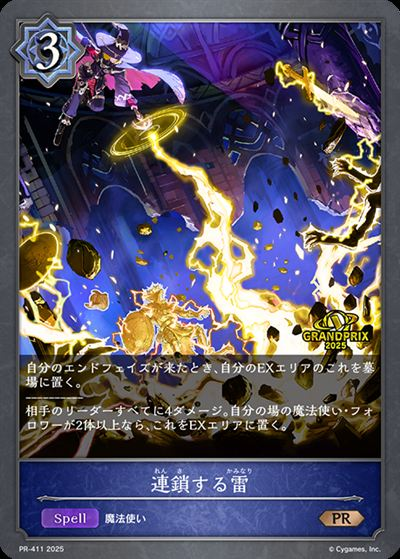
+1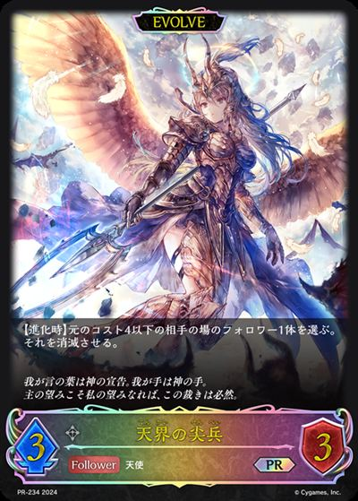
+1+1+1+1+1+1+1+1+1+1+1 +1+1+1+1+1+1+1+2+2+1+1+1+1+2+2
+1+1+1+1+1+1+1+2+2+1+1+1+1+2+2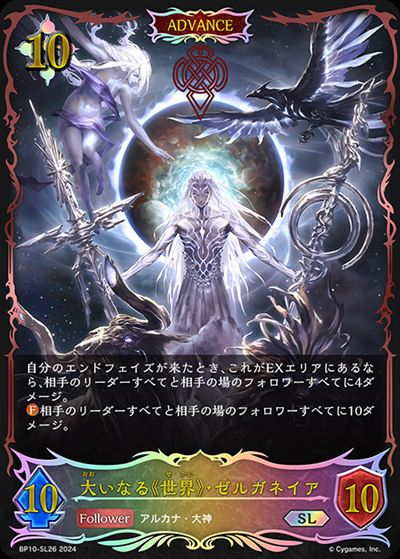
+1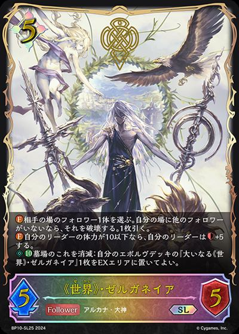
+1+1+1+1+1+2+2+1+1+2+2+2+1+1+1+1+1+1+1+1+1+2+2+1+1+2+2+2+1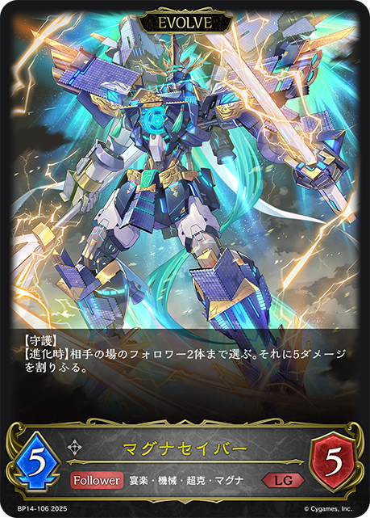
+1+1+2+2| 名次 | 名次/人数 | 选手 | 卡组码 | 日期 | 赛事 |
|---|---|---|---|---|---|
| 10 | 10/556 | ナマコ | 1YQE68 | 2026/10/24 | 赛事结果 |
| 1 | 1/38 | 金森もなか | Y4L1N | 2026/10/11 | 赛事结果 |
| 2 | 2/70 | shocker | 1497KA | 2026/10/04 | 赛事结果 |
| 1 | 1/19 | マルモリ | ZYSFJ | 2026/10/18 | 赛事结果 |
| 31 | 31/556 | kanegon | 117AUL | 2026/10/24 | 赛事结果 |
| 31 | 31/556 | パインAme | 2Y4AQG | 2026/10/24 | 赛事结果 |
| 4 | 4/70 | Sea_Lion | 49CS9 | 2026/10/04 | 赛事结果 |
| 1 | 1/16 | マスミ | 173CXS | 2026/10/17 | 赛事结果 |
| 1 | 1/16 | マスミ | 173CXS | 2026/10/12 | 赛事结果 |
| 2 | 2/22 | オウノ | M88NU | 2026/10/17 | 赛事结果 |
| 2 | 2/20 | 神羅 | BVDA0 | 2026/10/11 | 赛事结果 |
| 2 | 2/20 | 越後のちりめん問屋 | 1Y70P | 2026/10/10 | 赛事结果 |
| 2 | 2/16 | あまぐも | 2FZA5 | 2026/10/17 | 赛事结果 |
| 5 | 5/39 | kanegon | 1QVCXN | 2026/10/03 | 赛事结果 |
| 6 | 6/46 | ぺろ | 2Z42RS | 2026/10/02 | 赛事结果 |
| 1组队赛 | 1/7 | おら | 1BDEY4 | 2026/10/03 | 赛事结果 |
| 2 | 2/13 | パイン | CMJMJ | 2026/10/18 | 赛事结果 |
| 7 | 7/45 | 金森もなか | Y4L1N | 2026/10/10 | 赛事结果 |
| 4 | 4/25 | ガラテア | 1NW544 | 2026/10/12 | 赛事结果 |
| 1组队赛 | 1/6 | でぃっしー | 1BAJGY | 2026/10/10 | 赛事结果 |
| 8 | 8/45 | shocker | 19EVZ2 | 2026/10/10 | 赛事结果 |
| 8 | 8/44 | ヒヒ | 65JBT | 2026/10/11 | 赛事结果 |
| 5 | 5/26 | 極圏 | 193YAC | 2026/10/18 | 赛事结果 |
| 2 | 2/10 | なつり | 1JPXWY | 2026/10/12 | 赛事结果 |
| 6 | 6/26 | 紅葉 | PPD76 | 2026/10/10 | 赛事结果 |
| 1 | 1/4 | 神羅 | ABT3S | 2026/10/03 | 赛事结果 |
| 7 | 7/26 | カイト | 135PSQ | 2026/10/10 | 赛事结果 |
| 7 | 7/25 | koukue | U5T3E | 2026/10/12 | 赛事结果 |
| 4 | 4/14 | 床鰻のｼ者 Tom | PXQK6 | 2026/10/12 | 赛事结果 |
| 4组队赛 | 4/14 | ゆあ | 1W68HS | 2026/10/12 | 赛事结果 |
| 5 | 5/17 | しぐれ | 242F9W | 2026/10/04 | 赛事结果 |
| 6 | 6/20 | オウノ | 11PVFN | 2026/10/11 | 赛事结果 |
| 4 | 4/13 | 袴にブーツ | 1B6AXE | 2026/10/05 | 赛事结果 |
| 6 | 6/19 | 信者 | 2E0PQ4 | 2026/10/18 | 赛事结果 |
| 8 | 8/23 | チモ | 141ZBE | 2026/10/17 | 赛事结果 |
| 6 | 6/16 | マスミ | 173CXS | 2026/10/11 | 赛事结果 |
| 8 | 8/21 | じゃこん | Y5PV2 | 2026/10/11 | 赛事结果 |
| 5 | 5/13 | 果実農家/かじつのうか | 1S05BW | 2026/10/10 | 赛事结果 |
| 7 | 7/18 | 床鰻のｼ者 Tom | 1GVVX2 | 2026/10/25 | 赛事结果 |
| 8 | 8/20 | てむそ猫 | 1WHALG | 2026/10/11 | 赛事结果 |
| 8 | 8/19 | BONE | 1XQKJQ | 2026/10/18 | 赛事结果 |
| 6组队赛 | 6/14 | ぽんざ | 1SF9MS | 2026/10/12 | 赛事结果 |
| 7 | 7/16 | あまぐも | 2FZA5 | 2026/10/11 | 赛事结果 |
| 7 | 7/16 | もくん | 1YHPU8 | 2026/10/04 | 赛事结果 |
| 7 | 7/15 | パイン | CMJMJ | 2026/10/25 | 赛事结果 |
| 7 | 7/12 | おうま | F8XPJ | 2026/10/17 | 赛事结果 |
| 8 | 8/13 | オウノ | 19J84L | 2026/10/25 | 赛事结果 |
| 7 | 7/11 | 冥府 | 1PFR4L | 2026/10/11 | 赛事结果 |
| 6 | 6/9 | マンマル | XFJBA | 2026/10/25 | 赛事结果 |
| 5组队赛 | 5/7 | かんむん | K8KVJ | 2026/10/03 | 赛事结果 |
| 7组队赛 | 7/7 | ガラテア | 1NW544 | 2026/10/03 | 赛事结果 |
| 图片 | 平均张数 | 使用率 | 携带最好成绩 | 不携带最好成绩 | 1张比例 | 2张比例 | 3张比例 |
|---|---|---|---|---|---|---|---|
| 3.00 | 100.0% | 无 | 0.0% | 0.0% | 100.0% | ||
| 3.00 | 100.0% | 无 | 0.0% | 0.0% | 100.0% | ||
| 3.00 | 100.0% | 无 | 0.0% | 0.0% | 100.0% | ||
| 3.00 | 100.0% | 无 | 0.0% | 0.0% | 100.0% | ||
| 3.00 | 100.0% | 无 | 0.0% | 0.0% | 100.0% | ||
| 3.00 | 100.0% | 无 | 0.0% | 0.0% | 100.0% | ||
| 3.00 | 100.0% | 无 | 0.0% | 0.0% | 100.0% | ||
| 2.98 | 100.0% | 无 | 0.0% | 2.0% | 98.0% | ||
| 2.96 | 100.0% | 无 | 0.0% | 3.9% | 96.1% | ||
| 2.90 | 100.0% | 无 | 0.0% | 9.8% | 90.2% | ||
| 2.61 | 100.0% | 无 | 0.0% | 39.2% | 60.8% | ||
| 2.59 | 100.0% | 无 | 3.9% | 33.3% | 62.7% | ||
| 1.06 | 100.0% | 无 | 94.1% | 5.9% | 0.0% | ||
| 1.86 | 90.2% | 15.7% | 52.9% | 21.6% | |||
| 0.71 | 51.0% | 31.4% | 19.6% | 0.0% | |||
| 0.41 | 41.2% | 41.2% | 0.0% | 0.0% | |||
| 0.59 | 35.3% | 15.7% | 15.7% | 3.9% | |||
| 0.18 | 11.8% | 5.9% | 5.9% | 0.0% | |||
| 0.12 | 11.8% | 11.8% | 0.0% | 0.0% | |||
| 0.06 | 5.9% | 5.9% | 0.0% | 0.0% | |||
| 0.04 | 3.9% | 3.9% | 0.0% | 0.0% |
| 图片 | 平均张数 | 使用率 | 携带最好成绩 | 不携带最好成绩 | 1张比例 | 2张比例 | 3张比例 |
|---|---|---|---|---|---|---|---|
| 3.00 | 100.0% | 无 | 0.0% | 0.0% | 100.0% | ||
| 2.98 | 100.0% | 无 | 0.0% | 2.0% | 98.0% | ||
| 2.73 | 100.0% | 无 | 0.0% | 27.5% | 72.5% | ||
|
0.73 | 52.9% | 33.3% | 19.6% | 0.0% | ||
| 0.24 | 13.7% | 3.9% | 9.8% | 0.0% | |||
| 0.08 | 7.8% | 7.8% | 0.0% | 0.0% | |||
| 0.06 | 5.9% | 5.9% | 0.0% | 0.0% | |||
| 0.06 | 5.9% | 5.9% | 0.0% | 0.0% | |||
| 0.04 | 3.9% | 3.9% | 0.0% | 0.0% | |||
|
0.04 | 3.9% | 3.9% | 0.0% | 0.0% | ||
| 0.02 | 2.0% | 2.0% | 0.0% | 0.0% | |||
| 0.02 | 2.0% | 2.0% | 0.0% | 0.0% | |||
| 0.02 | 2.0% | 2.0% | 0.0% | 0.0% |